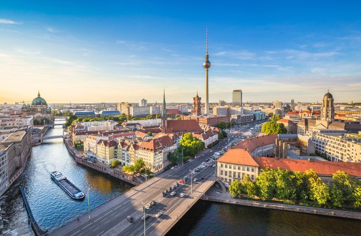
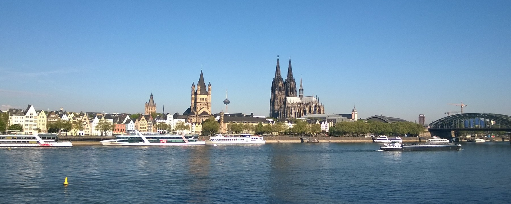
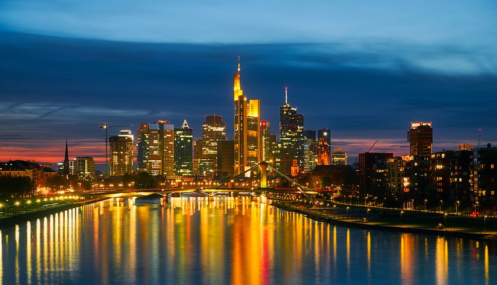

Kaupungit
5 Suurinta Kaupunkia.
- Berliini(PK) (3.5 mil) 
- Hampuri (1.85 mil)
- München (1.48 mil)
- Köln (1.08 mil) 
- Frankfurt (764 tuhatta) 
- Kokonais asukasluku (83 mil)
Tässä on kuva berliinin kaupungista.
Berliini on Saksan pääkaupunki ja yksi Saksan osavaltioista.
Noin 3,4 miljoonalla asukkaallaan se on myös Saksan suurin ja Euroopan unionin suurin kaupunki.
Toisin kuin joidenkin muiden kaupunkialueiden (esimerkiksi noin 12 miljoonan asukkaan Suur-Pariisin) kohdalla, Berliinissä kaupungin viralliset rajat ja kaupunkimaisesti rakennetun alueen tosiasialliset rajat vastaavat melko hyvin toisiaan.
Löyhemmin määritelty Berliinin metropolialue jatkuu kuitenkin kauas ympäristöön, ja sillä asuu alueen määritelmästä riippuen noin 4,4–5,9 miljoonaa ihmistä.
Eurostatin mukaan metropolialueen asukasluku on noin viisi miljoonaa.
Kansainvälisesti tunnettuine kulttuurilaitoksineen, yliopistoineen ja tapahtumineen Berliini on yksi Euroopan merkittävimmistä tiede- ja kulttuurikeskuksista.
EU:n väkirikkaimman jäsenmaan pääkaupunkina se on myös vaikutusvaltainen poliittinen keskus ja tärkeä liikenteen solmukohta.
Lisäksi kaupunki tunnetaan vilkkaasta yöelämästään ja kansainvälisestä ja vapaamielisestä ilmapiiristään, joka houkuttelee varsinkin nuoria muuttajia.
Pääkaupunkiasemastaan huolimatta Berliini ei ole kaikissa suhteissa Saksan tärkein kaupunki: esimerkiksi maan finanssielämän ja lentoliikenteen keskus on Frankfurt am Main, vaurain kaupunki on satamakaupunki Hampuri ja merkittävin teknologiakeskittymä on München.

Tässä on kuva hampurin Cellestä.
Hampuri on Saksan toiseksi suurin kaupunki ja maan tärkein satama.
Se sijaitsee Pohjois-Saksassa Elben alajuoksun varrella.
Kaupungin virallinen nimi on Hampurin vapaa- ja hansakaupunki, muistuttaa sen jäsenyydestä keskiaikaisessa Hansaliitossa ja siitä, että Hampuri on edelleen kaupunkivaltio ja yksi Saksan kuudestatoista osavaltiosta.
Hampurin naapuriosavaltiot ovat pohjoisessa Schleswig-Holstein ja etelässä Ala-Saksi.
Hampurin kaupungin ja osavaltion hallinnollinen alue on 755 km², jolla elää noin 1,9 miljoonaa asukasta.
Hampuria ympäröivillä kaupunkimaisen asutuksen alueilla asuu lisäksi 750 000 asukasta.
Laajimmin käsitettynä Hampurin suurkaupunkialueeseen kuuluu 18 100 km², jolla asuu nelisen miljoonaa asukasta.

Tässä on munchenin linna.
München on Saksan kolmanneksi suurin kaupunki Berliinin ja Hampurin jälkeen.
Se sijaitsee Etelä-Saksassa Isarjoen varrella Baijerin osavaltiossa ja on myös osavaltion pääkaupunki.
Ensimmäinen kirjallinen maininta kaupungista on 14 kesäkuuta 1158. Münchenin väkiluku oli vuonna 2011 noin 1,4 miljoonaa.
Münchenin kasvaessa siihen on sulautunut lähiseudun pikkukaupunkeja.
Garching bei Münchenissä on tähtitieteen tutkimuskeskus, jossa on yksi lukuisista Max Planck -instituuteista sekä Euroopan eteläisen observatorion päämaja.
Münchenissä on kaksi Saksan maineikkaimpiin kuuluvaa yliopistoa, Ludwig-Maximilians-Universität ja Technische Universität München.
Vuonna 1972 Münchenissä pidettiin kesäolympialaiset ja vuonna 2002 Yleisurheilun Euroopan-mestaruuskilpailut 2002.
Kaupunki tunnetaan myös sen vuotuisesta Oktoberfest-olutjuhlasta, Hofbräuhaus-oluthallista ja jalkapallojoukkue FC Bayern Münchenistä.
München on taloudellisesti yksi Saksan tärkeimmistä kaupungeista, sillä Münchenissä sijaitsee muun muassa kahdeksan DAX-yrityksen, kuten Bayerische Motoren Werke AG:n, Siemens AG:n ja Allianz SE:n, pääkonttorit.
Tärkeimpiä elinkeinoaloja ovat auto-, kone-, sähkö- ja panimoteollisuus, pankki- ja vakuutuspalvelut sekä kustannustoiminta.
Tässä on kuva Kölnin kaupungista.
Köln sijaitsee maan länsiosassa, Nordrhein-Westfalenin osavaltiossa Reinjoen rannalla.
Kaupunkia pidetään Reinin alueen taloudellisena, kulttuurisena ja historiallisena pääkaupunkina.
Köln on vanhin Saksan suurkaupungeista: se perustettiin roomalaiskaudella 38 eaa.
ja Köln sai roomalaisen kaupungin aseman 50 jaa.
Kaupunki nimettiin keisarinna Agrippinan mukaan.
Kölnin tuomiokirkko on kaupungin kuuluisin maamerkki ja nähtävyys.
Goottilaistyylisen katedraalin rakentaminen aloitettiin 1200-luvulla ja se valmistui vasta 600 vuotta myöhemmin 1800-luvulla.
Valmistuessaan vuonna 1880 tuomiokirkko oli maailman korkein rakennus. Kirkon kaksoistornit ovat 157 metriä korkeita.
Kölnin tuomiokirkko.
Tässä on kuva Frankfurtista.
Frankfurt, on kaupunki keskisessä Saksassa Hessenin osavaltiossa.
Se on osavaltionsa suurin ja maan viidenneksi suurin kaupunki.
Se sijaitsee Mainjoen varrella Hessenin eteläosassa.
Vuonna 843 Frankfurtista tehtiin itäfrankkien valtakunnan pääkaupunki, ja 1200-luvulla siitä tuli oma kaupunkivaltionsa, Frankfurtin vapaakaupunki.
Vuonna 1866 se liitettiin Preussiin ja vuonna 1871 yhdistyneeseen Saksaan.
Frankfurt on kansainvälisesti huomattava talouselämän keskus ja Saksan merkittävin finanssikeskus.
Siellä sijaitsevat muun muassa Euroopan Keskuspankki, Deutsche Bundesbank, Frankfurtin arvopaperipörssi ja Frankfurtin messut.
Kaupunki on niin ikään merkittävä maa- ja ilmaliikenteen solmukohta